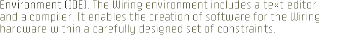
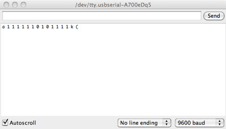
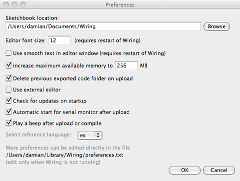

Wiring Development Environment (PDE)
Wiring Environment Preferences
Sketchbook
Tabs, Multiple Files, and Classes
Application Upload
Wiring Development Environment
We've designed a simple and usable editor for writing and running programs in the Wiring hardware. The Wiring Environment (Integrated Development Environment or IDE) has a text editor and compiler for writing programs for the Wiring hardware. When the "run" button is clicked, the program compiles. The toolbar provides functionality for compiling programs, creating a new sketch, opening, saving, and exporting to the hardware. Additional commands are available through the menus. The message area gives feedback while saving and exporting and also shows the locations of errors when programs are compiled. The Serial Monitor text area presents messages and can be written from the Wiring board using with the Serial.print() programming function.

Software written using Wiring are called sketches. These sketches are written in the text editor. It has features for cutting/pasting and for searching/replacing text. The message area gives feedback while saving and uploading and also displays errors. The Serial Monitor displays text output by Wiring programs and text output from programs with the Serial.print() and Serial.println() functions, the console displays messages including complete error messages . The toolbar buttons allow you to run and stop activity, create a new sketch, open the circuit schematics for the sketch, open, save, upload and the Serial Monitor:
| Verify / Compile: Verifies the sketch code. | ||
| Schematics: Open a window with the sketch circuit schematics if available. | ||
| New: Creates a new sketch. In Wiring, projects are called sketches. | ||
| Open: Select and load a pre-existing sketch. A menu opens and you may choose from your own sketchbook, examples, or you can open a sketch from anywhere on your computer or network. | ||
| Save: Saves the current sketch into the Wiring sketches folder. If you want to give the sketch a name other than the current date, you can choose save As from the File menu. | ||
| Upload to the Wiring hardware: Exports the current sketch into the sketchbook and uploads it to the Wiring hardware. The directory containing the files is opened. There is more information about uploading below | ||
| Serial monitor: Opens the Serial Monitor Window and a serial port connection to monitor the data coming from the Wiring hardware, this is very useful for debugging and verification. |
Additional commands are found within the five menus: File, Edit, Sketch, Tools, Help. The menus are context sensitive which means only those items relevant to the work currently being carried out are available.
File
- New (Ctrl+N)
Creates a new sketch in a new window, named as the current date is the format "sketch_YYMMDDa". - Open (Ctrl+O)
Open a sketch in a new window. - Open Recent
Shows a list of recent sketches and opens a sketch in a new window. - Sketchbook
Open a sketch from the sketchbook folder. - Close (Ctrl+W)
Close the sketch in the front most window. If this is the last sketch that's open, you will be prompted whether you would like to quit. To avoid the prompt, use Quit instead of Close when you want to exit the application. - Save (Ctrl+S)
Saves the open sketch in it's current state. - Save as... (Ctrl+Shift+S)
Saves the currently open sketch, with the option of giving it a different name. Does not replace the previous version of the sketch. - Upload to wiring hardware (Ctrl+U)
Uploads the program into the wiring hardware. - Page Setup (Ctrl+Shift+P)
(Not working yet) - Print (Ctrl+P)
(Not working yet) - Preferences (Ctrl+,)
Allows you to change some of the ways Wiring works. - Quit (Ctrl+Q)
Exits the Wiring Environment and closes all Wiring windows.
Edit
- Undo (Ctrl+Z)
Reverses the last command or the last entry typed. Cancel the Undo command by choosing Edit » Redo. - Redo (Ctrl+Y)
Reverses the action of the last Undo command. This option is only available, if there has already been an Undo action. - Cut (Ctrl+X)
Removes and copies selected text to the clipboard (an off-screen text buffer) - Copy (Ctrl+C)
Copies selected text to the clipboard. - Copy as HTML (Shift+Ctrl+C)
Formats code so that it will appear in the Wiring Forum the same way it appears in the Wiring environment and copies it to the clipboard so it can be pasted somewhere else. - Paste (Ctrl+V)
Inserts the contents of the clipboard at the location of the cursor, and replaces any selected text. - Select All (Ctrl+A)
Selects all of the text in the file which is currently open in the text editor. - Comment/Uncomment (Ctrl+/)
Comments the selected text. If the selected text is already commented, it uncomments it. - Increase Indent (Ctrl+])
Indents the selected text two spaces. - Decrease Indent (Ctrl+[)
If the text is indented, removes two spaces from the indent. - Find (Ctrl+F)
Finds an occurrence of a text string within the file open in the text editor and gives the option to replace it with a different text. - Find Next (Ctrl+G)
Finds the next occurrence of a text string within the file open in the text editor.
Sketch
- Verify / Compile (Ctrl+R)
Verifies the sketch code (compiles the code) - Build (Ctrl+B)
Build the sketch files and leave the hex and intermediate files in the build folder inside the sketch - Schematics
Open a window with the circuit schematics for the sketch if available. - Show Sketch Folder
Opens the directory for the current sketch. - Import Library
Adds the necessary import statements to the top of the current sketch. For example, selecting Sketch » Import Library » Encoder adds the statement "#include" to the top of the file. These import statements are necessary for using the Libraries. - Add File
Opens a file navigator. Select .cpp .h .c files and add them to the sketch directory.
Tools
- Auto Format (Ctrl-T)
Attempts to format the code into a more human-readable layout. Auto Format was previously called Beautify. - Archive Sketch
Archives a copy of the current sketch in .zip format. The archive is placed in the same directory as the sketch. - Fix Encoding and Reload
Sketches that contain non-ASCII characters may look strange when opened. Garbled text and odd characters may appear where umlauts, cedillas, and Japanese formerly lived. This will reload your sketch using the same method as previous versions of Wiring, at which point you can re-save it which will write a proper UTF-8 version. - Serial Monitor (Shift+Ctrl+M)
Opens the Serial Monitor Window for monitoring the serial port. Wiring can detect the speed to use for the serial monitor directly from the sketch Serial.begin() statement. It is also possible to select it manually from the speed menu in the serial monitor.
- Board
Shows a list of Wiring boards and third party boards like Arduino or the user installed boards. - Serial Port
Allows to select which serial port to use as default for uploading code to the Wiring hardware or monitor data coming from it. The data coming from the Wiring hardware is printed in character format in the text area region of the console. - Burn Bootloader
Allows to burn a bootloader file into a board, shows a list of programmers.
Window
- Menu for switching between the open sketches.
Help
- Getting Started
Opens the reference for the Wiring Environment in the default Web browser. - Examples
Opens the Wiring examples menu. The content of this menu changes depending on the hardware selected. There are Basic and Topics examples which correspond to the Wiring basic API, Cross-platform examples which are examples from the Cross-platform libraries (libraries that doesn't depend on the hardware), Core which are examples from the Core libraries, (libraries for the current core used by the selected hardware), and Contributed which are examples from the libraries installed in the libraries folder in your Sketchbook. - Environment
Opens the Wiring environment information in the default Web browser. - Reference
Opens the Wiring reference in the default Web browser. Includes reference for the Wiring Framework (API), programming environment, libraries, examples and hardware in the language selected in Preferences. - Find in Reference (Ctrl+Shift+F)
Select a word in your program and select "Find in Reference" to open that reference HTML page in the default Web browser. - Wiring hardware
Opens the hardware reference in the default Web browser. Includes diagrams, schematics and comparison with other hardware. - Frequently Asked Questions
Answers to some basic question about the Wiring project. - Troubleshooting
Opens the Wiring Forum in the default Web browser. - Visit Wiring.org.co (Ctrl+5)
Opens default Web browser to the Wiring.org.co homepage. - About Wiring
Opens a concise information panel about the software.
Preferences
It is possible to set some preferences directly from the editor. The preferences dialog box allows for quickly change some handy options as well a direct link to the actual preferences file for the application for changing details.
The preferences dialog include these options: Editor font size, smooth text, maximum memory for the application, delete previous exported code when uploading, use external editor, checking for updates, automatic start for serial monitor after upload, play a beep after upload or compile (two beeps will sound if an error is found), select the language of your preference for the reference and a link to the actual references.txt file on your system

Sketchbook
All Wiring projects are called sketches. Each sketch has it's own directory (folder) and inside there is the main program file which has the same name as the sketch. For example, if the name of the sketch is
"Sketch_123", ", the directory for the sketch will be called "Sketch_123"
and the main file will be called "Sketch_123.wiring" (or "Sketch_123.pde").
Sketches need other directories inside to contain additional code files. When a sketch is uploaded, all files are exported into into a single .hex file with the same name as the sketch. For example, if the sketch is named "Sketch_123", the exported file will be called "Sketch_123.hex"
Sketches are all kept in the Wiring directory, which will be in different places on your computer or network, depending if you use Windows, Mac, or Linux and how you have your preferences set. To locate this directory, select the "Preferences" option in "File" menu.
It is possible to have multiple program divisions in one sketch. Each of these divisions is visible as a tab in the area below the menu. When a program is compiled these divisions are made into one file and compile as a single program. Divisions can also be separate C++ files (the extension .cpp or .h) which are compiled together with the Wiring files. To add a new division, click on the arrow to the right of the tabs. You can write functions and classes in new divisions and you can write any C or C++ code in files with the .c, .h or .cpp extension.
Tabs, Multiple Files, and Classes
It can be inconvenient to write a long program within a single file. When programs grow to hundreds or thousands of lines, breaking them into modular units helps manage the different parts. Wiring manages files with the Sketchbook and each sketch can have multiple files that are managed with tabs. The arrow button in the upper-right corner of the Wiring Development Environment is used to manage these files. Click this button to reveal options to create a new tab, rename the current tab, and delete the current tab. If a project has more than one tab, they can also be hidden and revealed. Hiding a tab temporarily removes that code from the sketch (it will not be compiled with the program when you press Verify/Compile).
Tabs are intended for more advanced users, and for this reason, the menu that controls the tabs is intentionally made less prominent.
For programmers familiar with C/C++. When a program with multiple tabs is run, the code is grouped together. When .cpp .h or .c files are added, they are copied into the sketch folder and are compiled when the sketch is compiled but they are not preprocessed (errors on these type of files may not be highlited within the file). Use this feature to develop new libraries or classes within a project with immediate testing.
Application Upload
Upload creates a version of the sketch that can run within the Wiring hardware. When code is exported from Wiring, the preprocessor add the function headers and includes to be a full C++ program and then the code is compiled. When a project is uploaded, a series of files are written to an "build" directory which is created within the primary sketch directory. If the sketch is called "Sketch_123", the build directory contains among many other files the following:
Sketch_123.cpp.hex
HEX file containing all necessary code for the sketch to run on the Wiring hardware. Includes the Wiring code as well as those custom to the sketch.
Sketch_123.cpp
The C++ file generated by the pre-processor from the PDE file. This is the actual file which is compiled into the HEX file by avr-g++, the C++ Compiler used in Wiring for the AVR8 Core.
Sketch_123.wiring (or Sketch_123.pde)
The original program file.
Every time a sketch is uploaded, all of the above files are re-written.
When a sketch is uploaded, all files (including those in the sketch folder and the sketchbook user libraries) are packed into a single .hex file.